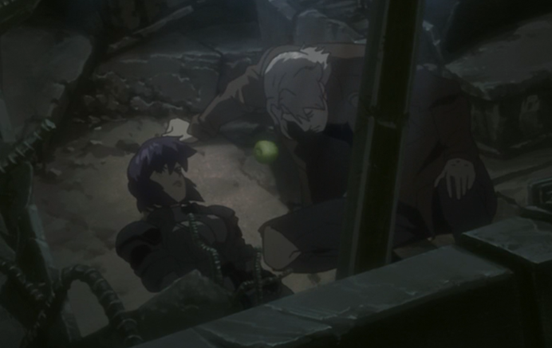

今天看了部电影，是攻壳机动队的一部剧场版，叫做individual eleven，这东西真是不知道怎么翻译的好了。。 当然这部电影可以分析的东西太多了！这就是我爱它的原因，这部电影的一个细节给予了我重大的暗示，就是在素子与久世两人被困在坑里的时候，两人刚刚醒来，就出下了如下的画面：

等等！那个苹果！这一瞬间打通了我的脑回路，看来作者是要玩一波他眼中的亚当夏娃play啊。果不其然，后来苹果频繁出现，并且在这个过程中，久世告诉了素子，他所谓的革命到底是什么玩意——即把所有人的记忆都传输到网上，创造一个新的神，指引人们，所有人的记忆联通所有人的记忆，自然会告诉人们对与错，善与恶，防止人们的自我堕落。当然这是我的理解，这部分确实有点晦涩，我本人没有研究过宗教，这部分很多东西可以跟宗教对应起来。 而素子出于一种纯粹的浪漫主义，同意帮助久世实现他的革命，想要创造出新的世界，这就是士郎正宗所想要表达的，他心中伊甸园么？一个新世界，人类与机体的彻底融合，思维，大脑与网络上的文件，程序连接在一起，一个全新的世界。确实很有趣。 而后面更加有意思的是，加特竟然扮演起了那个重新扛起十字架的人，他拯救了在坑里的两人，抓捕了久世，同时还有一些其他原因，导致革命搁浅，无法成就久世的梦想了。 这是一种单纯的激情，包含了爱人的激情，包含了创造的激情，也包含了突破禁忌的激情，我想一个浪漫主义者都会希望久世成功吧，可是现实是，倘若他成功了，那么难民将会彻底被核武器消灭，世界的政治格局也将大乱。素子，久世，加特这些在场的人也都将死去，if that is what you want。 总之，精彩的一部电影！还要再刷一遍。